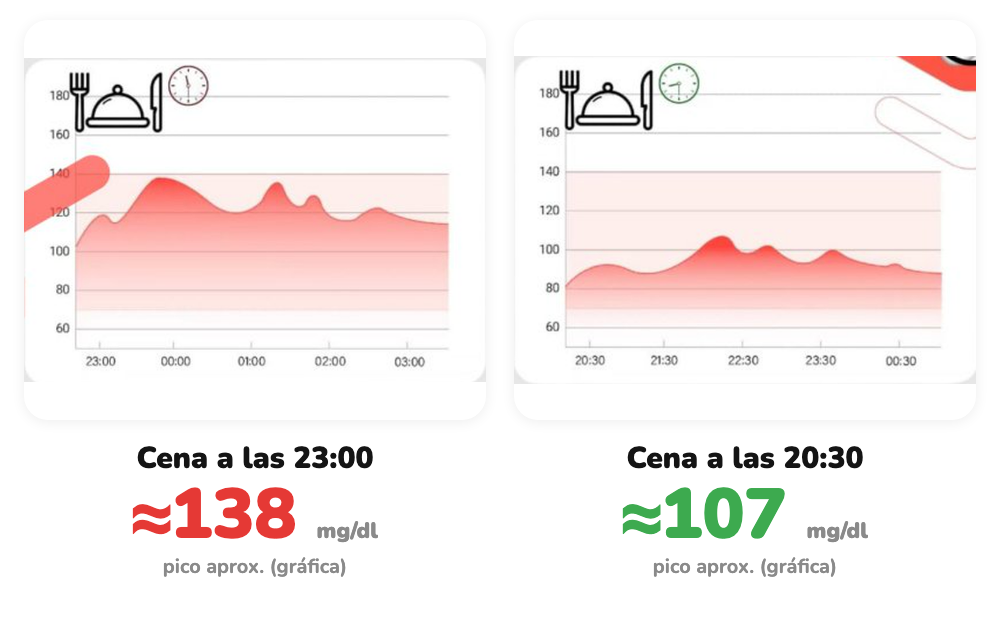

Cómo afecta
Misma cena. Distinta hora.
Un Viber cenó lo mismo a las 20:30 y a las 23:00. Su glucosa no respondió igual.
Desliza →
Hacemos visible lo invisible
Un Viber cenó lo mismo a las 20:30 y a las 23:00. Su glucosa no respondió igual.
Desliza →

Curvas reales de un Viber, misma cena en dos horarios. Picos aproximados leídos en la gráfica. La respuesta puede variar entre personas.
Tu glucosa y tu descanso lo notarán.
Desliza →
glucovibes.com